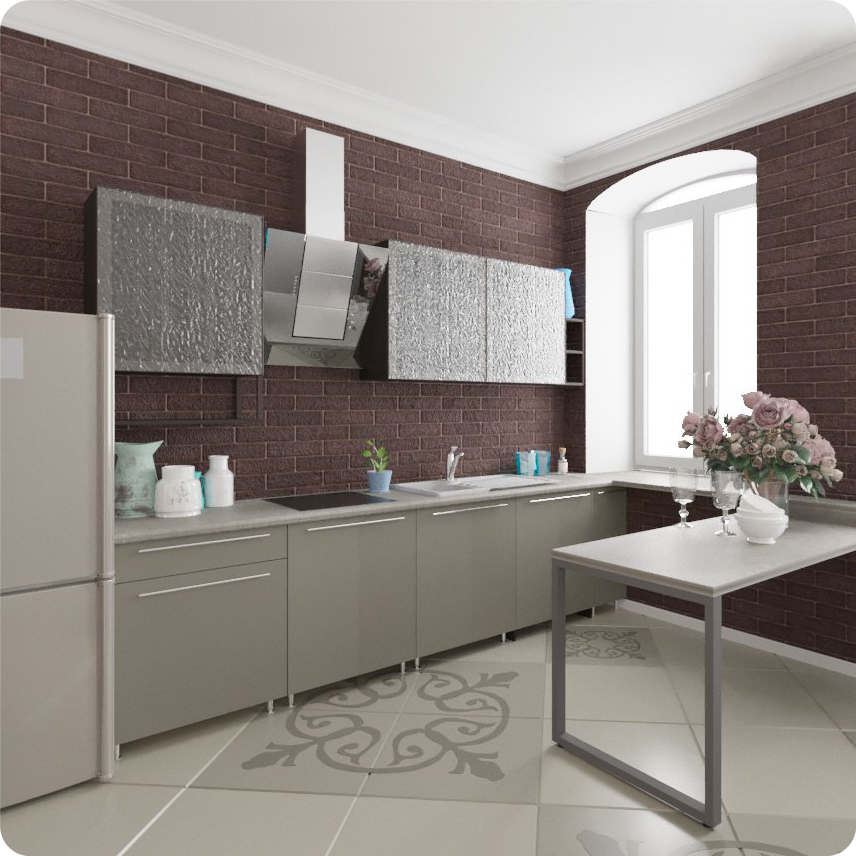

 Сайт ROBODEC создан группой дизайнеров по мебели из Санкт-Петербурга.
Данный сервис позволяет грамотно и быстро спроектировать 3D проект вашей будущей мебели, который полностью будет удовлетворять вашим желаниям и потребностям. В конце серии вопросов, вы получите 3D проект. Вы сможете скачать картинку или файл программы PRO100, а также перейти по ссылке для расчета проекта в компаниях – производителях мебели.
Идея создать «Виртуального дизайнера» родилась после многочисленных встреч с клиентами, которые знали, что они будут хранить и как пользоваться тем или иным изделием, но не понимали, как грамотно распределить полезное пространство.
Имея многолетний опыт работы в этой сфере, дизайнеры по мебели, выработали скрипт работы с клиентом. Смысл этого способа работы прост. Специалист задает несколько вопросов, которые раскрывают потребности клиента. И на основе ответов клиента, за считанные минуты, создается грамотный проект. Который отвечает всем требованиям и пожеланиям человека.
Еще одним толчком, к созданию данного проекта, послужили жалобы клиентов на то, что более 90% дизайнеров мебели при встрече не могут грамотно спроектировать будущую мебель, а просто требуют от клиентов их понимания конструкции.
Этот сервис сэкономит ваше время, деньги, а также поможет профессионально создать изделия, которые будут радовать вас на протяжении долгого времени.